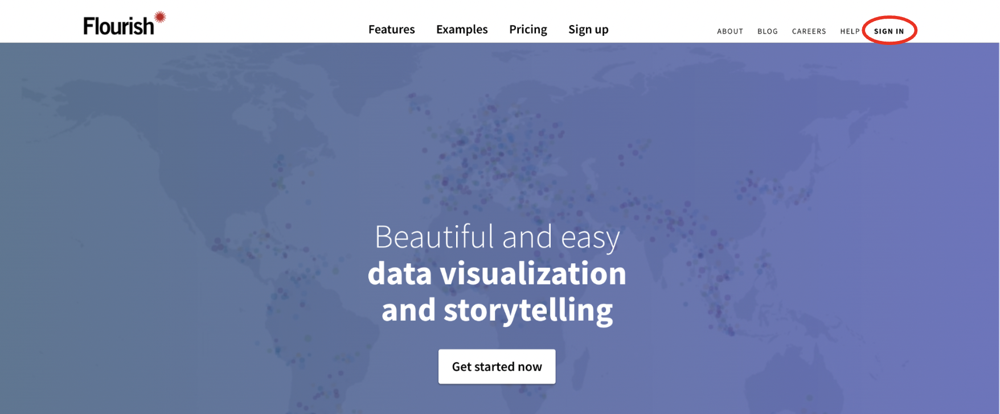
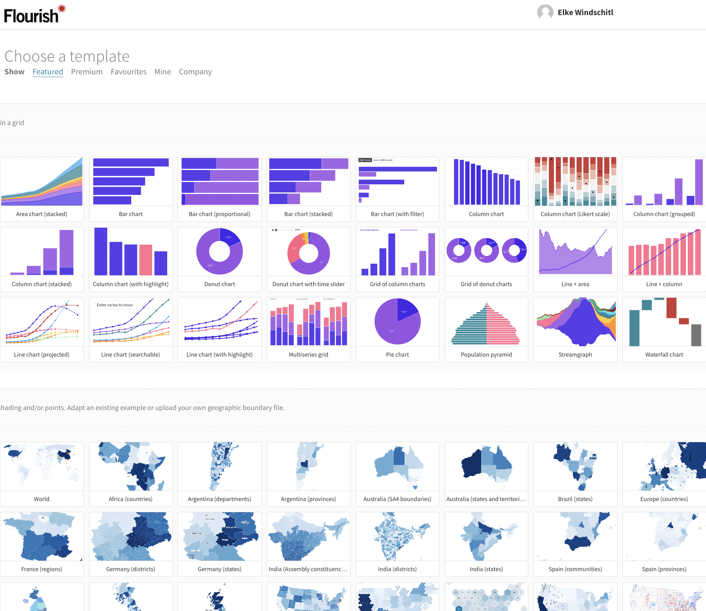
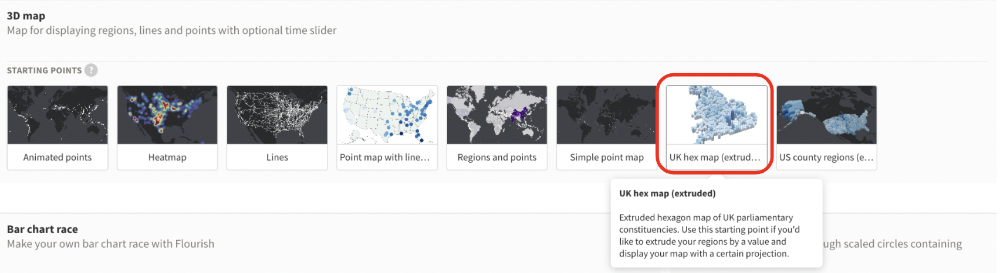
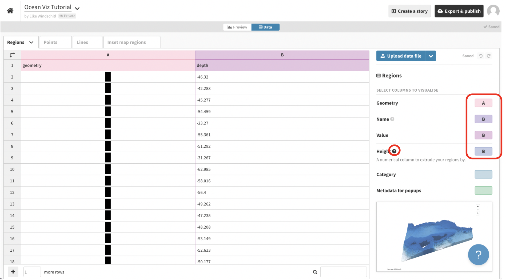
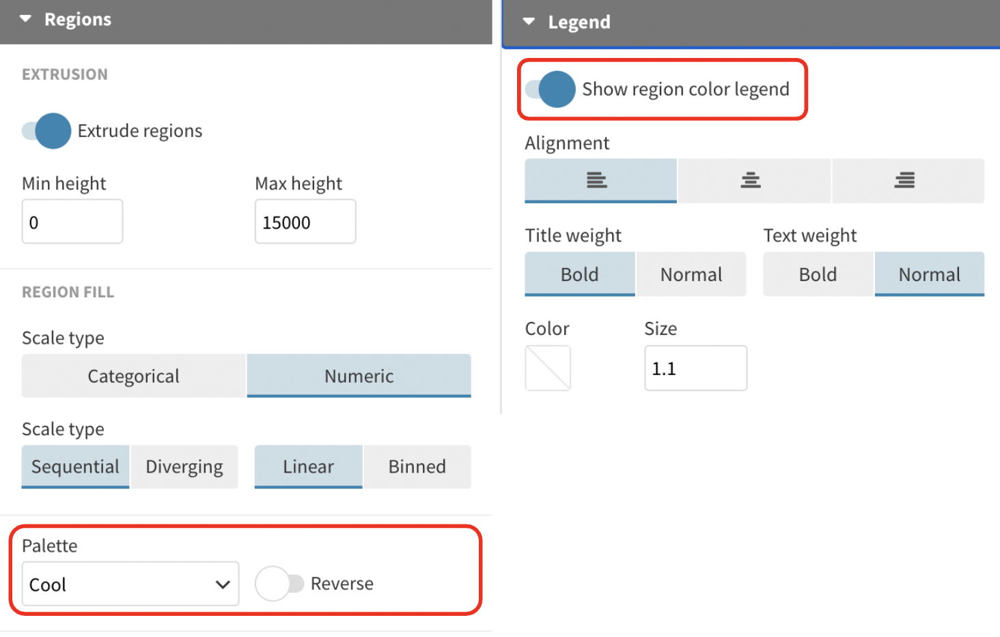
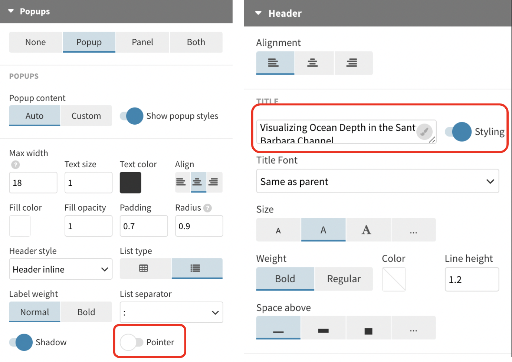
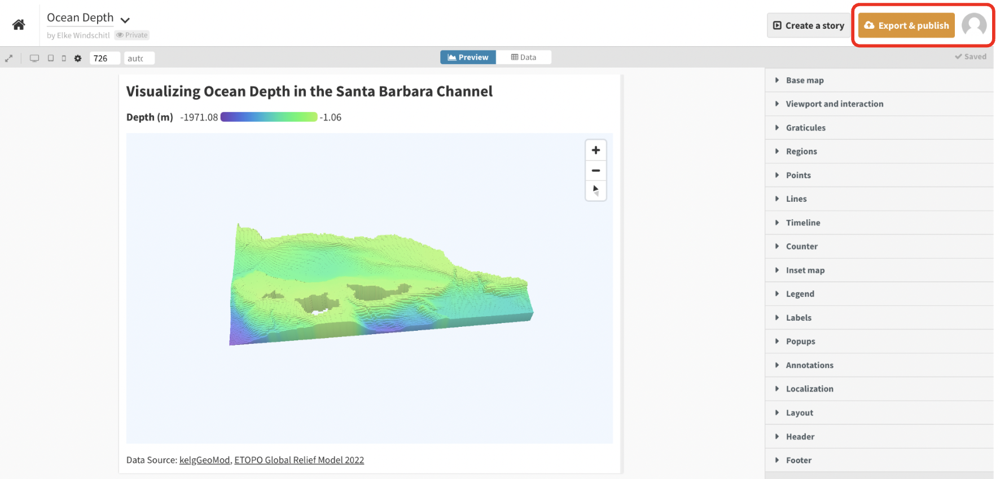

In this post, I share how I used Flourish – a data visualization platform – to visualize ocean depth data in the Santa Barbara Channel. I used ocean depth data from the kelpGeoMod project data repository.
Something New
I recently came upon a tweet about Flourish which is an online data visualization and storytelling platform. This was the first I’d heard of the platform, and I wanted to try it out as an alternative for other popular proprietary software such as Tableau. I pulled ocean depth data from my master’s capstone project, Developing a Data Pipeline for Kelp Forest Modeling (also known as kelpGeoMod), and started to explore. Here I will share how I created the visualization below.
Getting the Data
To get data to visualize, I navigated back to my masters capstone project data repository and downloaded the ocean depth data in the Santa Barbara Channel. The original data source was the ETOPO Global Relief Model 2022.
Getting Started in Flourish
I then created a free account with Flourish. With the free version of my account, I have access to a limited set of features, while the full version offers additional functionalities. I then started exploring available features.


Flourish had numerous templates for visualizing data. I noticed, though, that it is not currently compatability with raster data, so I had to convert my raster data to vector data. This is not ideal, but it was quickly doable with this relatively small raster file.
Code
# Load necessary librarieslibrary(tidyverse)library(terra)library(sf)# Set a data directory#dir <- "./data/"# Load depth datadepth <-rast(file.path(dir, "depth.tif"))# Vectorizedepth_vect <-as.polygons(depth[[1]], dissolve =FALSE)# Convert to sf objectdepth_sf <-st_as_sf(depth_vect) %>%rename("depth"="exportImage") %>%# rename column namefilter(depth <=0) %>%# filter for depths less than zeromutate(depth =round(depth, 3)) # round depth values# Write to GeoJSON file# st_write(obj = depth_sf, # file.path(dir, "depth.geojson", # driver = "GeoJSON"))
I decided to choose the UK hex map template because I wanted to use try out the three-dimensional extrusion feature.

Making the Map
Once you get started, to make the map you’ll have to replace the template data with your own. Name your project, navigate to the data tab, then upload your own GeoJSON data.
Be sure to select which columns go with which type of data. Flourish has helpful documentation hints denoted with question mark circles.

When you’re ready, swap back to the preview mode and start messing with your map’s aesthetics.
I chose to edit aesthetics such as the projection, background color, padding, palette, legend, the popup shape, title, and footer. I also added a screenreader description. You can adjust these settings however you would like.


Now you should have an export-ready three-dimensional image of ocean depth in the Santa Barbara Channel! Export and enjoy Flourishing!

Citation
BibTeX citation:
@online{windschitl2023,
author = {Elke Windschitl},
title = {Learning {Flourish} to {Visualize} {Ocean} {Depth} {Data}},
date = {2023-06-25},
url = {https://elkewind.github.io/posts/2023-06-25-flourish-ocean-depth},
langid = {en}
}